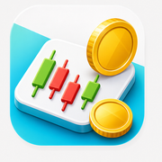

CryptoTrader
AI-Powered Cryptocurrency Trading on Desktop
CryptoTrader is an intelligent desktop application that uses neural networks to predict cryptocurrency price movements and execute trades automatically. Whether you're a seasoned trader or just getting started, CryptoTrader empowers you with data-driven trading strategies.
What CryptoTrader Does
Neural Network Prediction
Advanced machine learning models analyze historical price data across multiple timeframes (1 hour to 1 week) to predict price movements and generate trading signals for long and short positions.
Simulation & Live Trading
Test your strategies risk-free in simulation mode before deploying to live trading. Switch between modes seamlessly with full integration into Robinhood's cryptocurrency trading API.
Multi-Coin & Multi-Timeframe
Trade multiple cryptocurrencies (Bitcoin, Ethereum, Solana, Dogecoin, and more) with independent neural models for each coin across different timeframes to capture different market dynamics.
Real-Time Dashboard
Monitor everything from one comprehensive dashboard: live trading signals, profit/loss tracking, account value history, trade execution logs, and neural model status across all configured coins.
Customizable Settings
Configure profit targets, risk management parameters, DCA (Dollar Cost Averaging) signals, and more. Tailor the trading behavior to match your investment goals and risk tolerance.
Automated Execution
Once configured and trained, CryptoTrader runs 24/7, automatically executing trades based on neural network signals with no manual intervention required.
The Three-Step Process
Configure Settings
Set your trading parameters: profit targets, risk levels, coins to trade, and Robinhood API credentials.
Train Models
Train the neural networks for your selected coins. This analyzes historical price data and builds predictive models.
Start Trading
Click "Run All" in the top right to launch the neural runner and trader. Watch your dashboard as trades execute.
Ready to Get Started?
Visit the Setting Up page to configure your first trading profile.
Go to Setup Guide